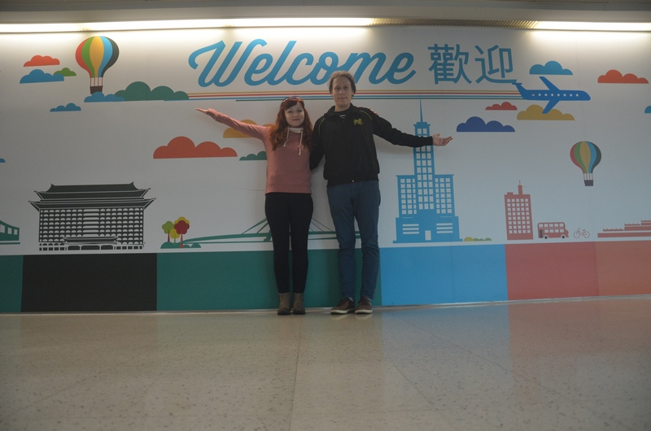

Když jsem letos v květnu koukala z Bosporské úžiny poprvé na Asii, v hlavě už jsme s Péťou v té době nosili plán splnit si sen a konečně se podívat za Julií a Mendy na Taiwan. Přesnější obrysy tento plán dostal někdy na začátku září, kdy jsme u Emirates koupili letenky a vypůjčili v knihovně průvodce. O dva měsíce později jsme se ocitli v úplně novém světě. Ta pravá Asie, kterou jsme během tří neuvěřitelně krásných, ale vyčerpávajících týdnů poznali, nám toho nabídla tolik, že ještě dnes nejsem schopná všechny zážitky vstřebat. Budu se o ně s vámi dělit postupně. A myslím, že se opravdu máte na co těšit :-)
Naše dlouhá cesta začala ve středu 4. listopadu, kdy jsme se SA busem vydali do Prahy. Z Ruzyně jsem letěla jenom jedinkrát v životě, když mi bylo šest. Od té doby tu to předpokládám dost zmodernizovali :-). Přestože se mi většinou na letištích čas děsně vleče, na této dovolené jsem nikdy neměla pocit, že bysme kdovíjak dlouho čekali. Buď šlo všechno velmi rychle nebo jsme dokázali čas efektivně vyplnit. Očekávanou premiérou pro nás byl let s Emirates, leteckou společností, která se těší velmi dobré pověsti, což byl také jeden z důvodů, proč jsme si je nakonec vybrali. A můžu říct, že to byla rozhodně skvělá volba. Emirates mají velice milé letušky (s rozkošnými kostýmky :)) a po dobu letu jsme nikdy netrpěli hladem, žízní ani zimou. V letadlech je navíc k dispozici bohatá filmotéka plná klasických filmových pokladů, která se mi zejména na zpáteční cestě postarala o příjemný let. Jen sluchátka doporučuju vzít si vlastní, ta jejich za moc nestojí ;-)
První úsek naší cesty trval necelých šest hodin, poté nás čekalo mezipřistání v Dubaji. Tady na nás padla celkem velká únava. Odlétat jsme měli až za 4 hodiny, což mi přišlo nekonečné. Zdejší letiště má ovšem jednu super vychytávku! Kromě klasických míst k sezení je po letišti roztroušena i řada lehátek, což je něco, co mezi dvěma dlouhými lety věru potřebujete. Dubajské letiště je taky vyhlášené svou mrazivou klimatizací, takže budete ještě rádi za to, že s sebou do tropů taháte zimní bundu :) Tak či tak jsme si tu nakonec dobře odpočinuli a než jsme se nadáli, seděli jsme v letadle, které už směřovalo rovnou do Taipei.
Cesta z Dubaje do Taipei mi ze všech letů, které jsme celkem absolvovali, utíkala asi nejpomaleji. Na jednu stranu jsem byla strašně unavená, na druhou jsem nedokázala udržet oči zavřené, jakmile začalo svítat a později, když se pod námi objevila Indie a pak Čína, jsem jen fascinovaně hleděla dolů. Okolo čtvrté hodiny odpoledne se z oblaků vyloupl hornatý ostrov, kterému portugalští mořeplavci dali název Ilha Formosa (Nádherný ostrov). Pilot nás ale svým kroužením ještě celkem dlouho napínal, než dostal povolení k přistání a my se po osmihodinovém letu konečně zase mohli dotknout pevné země. Teploměr ukazoval 29°C a naše radost neznala mezí :)

Konečně na Taiwanu!
K mému překvapení nás čekalo imigrační kolečko, snímání otisků prstů a dotazy, kde přesně budeme bydlet. Poté, co jsme úředníkům ukázali naši Airbnb rezervaci (o Airbnb tam asi nikdy nikdo neslyšel), se vyptávali, jestli je ta Anny (naše hostitelka) naše kamarádka a pořád se z nás snažili vytáhnout jméno hotelu. Nojo, já zapomněla, že jsme vlastně jednou nohou v Číně :D Ale pak nás konečně propustili, u pásů už na nás osamoceně čekaly naše dva kufry a za branami letiště večerní Taipei.
Na letišti jsme ještě stačili směnit nějaké penízky, koupit si taiwanskou simkartu a nechat si poradit cestu do centra, kde jsme se měli setkat s naší hostitelkou Anny. Bydlení u Anny ve východní čtvrti Zhongshan bylo moc fajn. Byteček byl útulný a Anny, která se živí jako turistická průvodkyně, pro nás připravila i spoustu tipů, co bychom mohli v Taipei navštívit. Bohužel už jsem byla ten večer natolik unavená, že jsem její povídání pouštěla jedním uchem tam a druhým ven :D Jediným, na co jsme se ještě zmohli, byla sprcha a rychlý nákup v obchodě 7 Eleven na rohu. Těmito sámoškami jsou města na Taiwanu posetá, najdete je na každém rohu a sortiment je všude prakticky stejný. Každopádně pro nás byly vždy jistotou, když jsme potřebovali zahnat akutní hlad nebo žízeň. Voda z kohoutku na Taiwanu totiž není pitná (Taiwanci jsou zvyklí si ji filtrovat).
I přes únavu po dlouhé cestě se první noc ozval jet lag. Někdy ve dvě ráno jsme se probudili ve stavu “jsem fresh, hurá do města”, což se opakovalo ještě následujících pár nocí. Jinak mě ale celkem překvapilo, že jsem na sobě časový posun nijak výrazně nepocítila. Pro mě jsou prostě mnohem bolestivější ty cesty na západ :)
Na druhý den nás čekalo setkání s Julií, na kterou jsem se těšila ze všech holek Erasmaček nejvíc. O tom ale zase příště :)